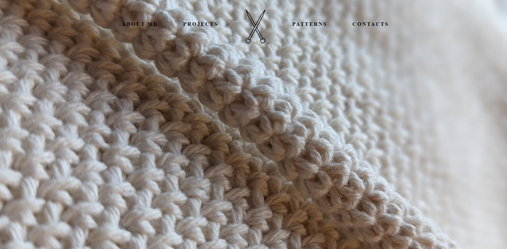
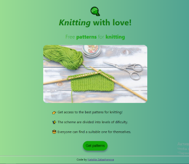

Nataliia Zabazhanova
Home
About
Projects
Contact
United Kingdom


Interactive Dictionary Project
Description
Welcome to the Interactive Dictionary Project! This web application provides users with a quick and convenient way to find synonyms for words they enter into the search area. With the power of
HTML, CSS, JavaScript, jQuery
a reliable
dictionary API
, this project offers an invaluable resource for expanding your vocabulary and enhancing your writing.
Key Features
User-friendly Interface:
The project features a clean and intuitive user interface, making it easy for users to enter a word of their choice and retrieve relevant synonyms. The search area is prominently displayed, ensuring a seamless user experience.
API Integration:
The project leverages a dictionary API to fetch synonym data. The API integration allows for seamless retrieval of synonym information, keeping the application up-to-date and accurate.
Responsive Design:
The project is built with a responsive design, ensuring optimal viewing and functionality across different devices, including desktops, tablets, and mobile phones. Users can access the dictionary and find synonyms on the go, wherever they are.
Open project
Real-time weather forecast. Description: The Real-Time Weather Forecast project is a web application that allows users to check the weather conditions for any city, their current location, or search for a specific city. With this project, users can stay informed about the current weather and get a 5-day forecast.
Knitkraft. Description: Welcome to KnitCraft, my first front-end development project!